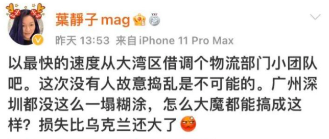
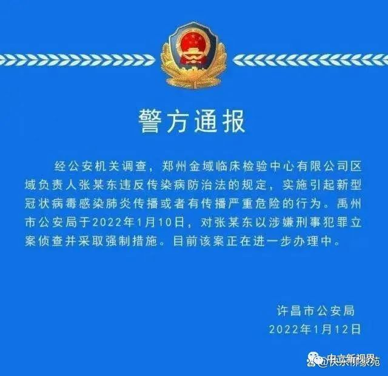
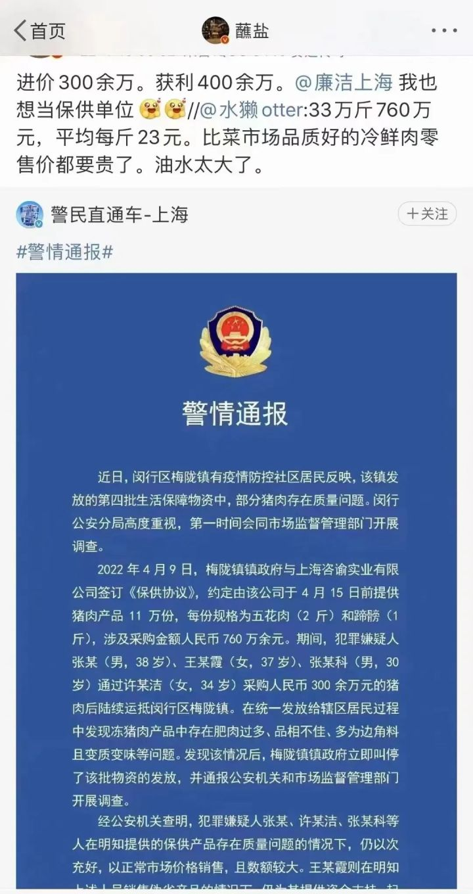
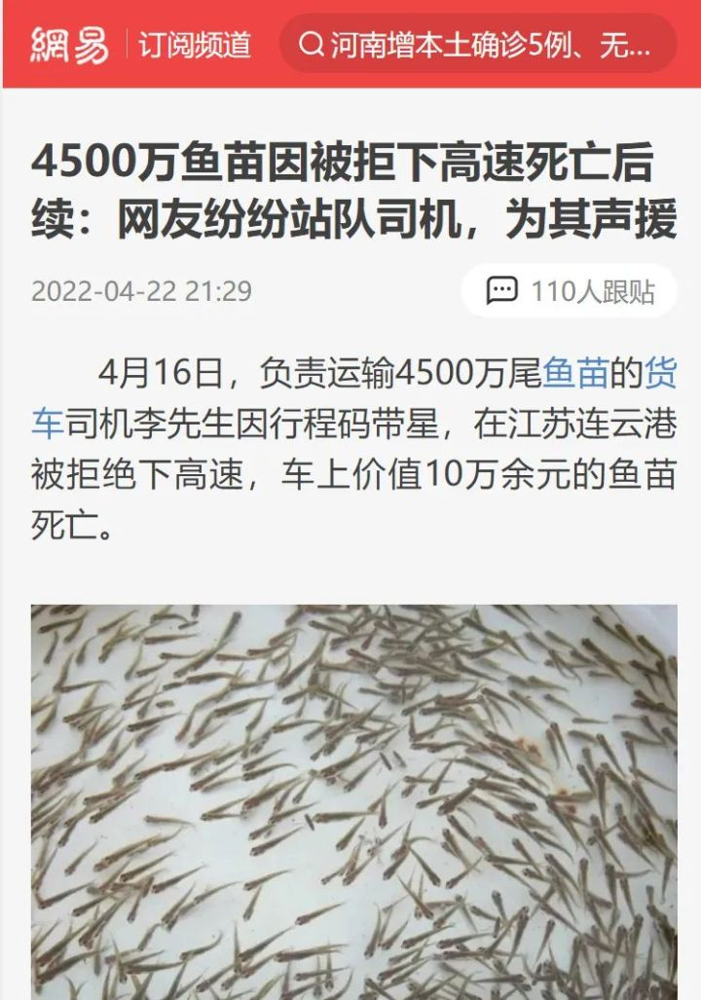

疫情中谁在捣乱
作者：刘忠良 - 中立视角
上海，被认为是中国管理最好的城市。
在过去两年，上海的精准防控，在防疫、经济、民生等方面取得了多赢的局面，成为引以为豪的典范。
但是，近一个月来，上海抗疫暴露出很多让人难以接受的问题，比如吃饭难、就医难。
叶剑英孙女，近期就为此发声，认为有人在故意捣乱。

同时，全国经过两年多的抗疫，仍然看不到什么时候是结尾。
有人就怀疑，是不是新冠疫情利益集团不想让中国疫情结束呢？
01、新冠疫情已经形成经济利益集团
在中国，经过两年的抗击疫情，在新冠疫苗、核酸检测、治疗药物等方面，确实存在一批疫情经济利益集团。
比如，今年1月，许昌警方对外宣布，郑州金域医学公司区域负责人张某东，因为违反传染病防治法规定，实施引起新型冠状病毒感染肺炎传播或者有传播严重危险的行为，被采取刑事强制措施。

其实，核酸检测本身就是在扩大新冠病毒的传播，尤其是聚众核酸检测。
在核酸检测时，聚众核酸检测，那么多人聚集在一起，在同一个地方张开嘴，必然会加速新冠病毒的传播。
但是，这样荒谬的现象，两年多了都没有被纠正。
如此不科学的方式，平常人都能理解的核酸检测风险，为何就不能纠正呢？这到底有什么猫腻呢？
其实，即使不是排队核酸检测，上门的核酸检测也会加速新冠传播，尤其是对传播力极强的奥密克戎。
比如，上海某95岁独居老人，近期从未出门，仅仅接触上门核酸检测人员。前面检测是阴性，后来检测为阳性，然后被带走隔离。
显然，从逻辑来看，最大概率就是核酸检测帮助传播新冠奥密克戎。
其实，不仅核酸检测行为可以加速新冠传播，制造虚假结果也可以牟利。
最近，安徽合肥终止了两家核酸检测公司的服务，因为制造虚假阳性，导致人为增加核酸检测。
反过来，如果实际是阳性，然后虚报为阴性，通过隐瞒，也可以加速新冠病毒的传播。
4月16日，中央纪委国家监委网站官微推送了一则消息：北京市卫健委主任于鲁明被查，涉嫌核酸检测提成！
全国各地，到底有多少涉嫌核酸检测提成的腐败呢？
一轮又一轮的核酸检测，有没有这种腐败在推动呢？
为了利益，有没有人纵容病毒传播呢？
从各地一些通报来看，确实存在一些核酸检测腐败。
被暴露出来的，肯定只能是一小部分。
而且，聚众核酸检测，这是非常明显有助于新冠病毒传播的行为，迟迟不能纠正，这不是一个严重问题吗？
于是，学者杨佩昌等就提出，要切断核酸检测利益链，否则中国疫情就不会结束。
02、封锁已经产生抗疫利益集团
实际上，中国不缺上海所需的粮油、蔬菜、水果等。
只要市场供应机制正常，不需要全国各地的援助，上海人也不会挨饿。
在正常防护的情况下，允许运输食品的货车自由进出上海，允许超市和菜市场正常运作，允许快递及外卖正常配送，并不会加速疫情扩散。
况且，人体对抗新冠奥密克戎，需要良好的营养，充分食物供应的本身就是在支援抗疫。
这么简单的事情，上海的管理者们不会想不明白，怎么就不这么做呢？
一些运输蔬菜水果肉类的货车司机，无法正常进入上海，导致食品腐烂。与此同时，上海人却在饿肚子。如此荒谬，上海管理者无人知道吗？
再如，京东物流支援上海配送优质食品，但是，一些小区却阻挠京东物流的进入。与此同时，一些上海人却拿到三无食品、过期食品、小作坊食品。
这种奇怪的现象，到底有什么猫腻？为何弃优择劣？

这些，如果真的没有腐败，如果真的没有利益，就根本无法解释！
如果不是这样，那一定就是有些人故意捣乱！
但是，如果说一点利益都没有，显然是不可能的。
实际上，只要恢复正常的市场物资供应，配合正常的防疫措施，货运物流、超市和农贸市场、快递及外卖等正常运作，上海人所担心的吃饭问题就会立马得到解决。
这么简单的问题，绝非是没有人想到！
03、抗疫突破法律，扩大了各级行政权力
在全国各地的高速公路，各个地方可以随意封锁高速。至于你拉什么货物，无论是支援上海，还是农民种地所急需的化肥种子，都一律封锁！
在一些农村，农民去种地，却被警察带走，说是违反防疫规定，有的还强迫农民伏法认罪。显然，抗疫已经让有些人“拿鸡毛当令箭”。
聚众核酸检测不传染，空旷的地里有病毒？真是胡扯透顶！
有的农村，五千年来破天荒，给农民发“春耕证”去种地。
历史首次，种地还需要审批？
有视频显示，农民在蔬菜大棚劳作，却被警察带走，同样说是违反防疫规定。
难道，蔬菜大棚里也有新冠病毒？这世界上还有比这更荒唐的吗？
有的报道说，某地让农民错峰种地！我晕！难道空旷的田地里比大城市早晚高峰更拥挤？
这些，都是基本常识，无论是警察还是基础领导，肯定知道这很荒谬。
但是，明明平常人都看出的荒谬，有些人就是“拿鸡毛当令箭”！
这也是利益吗？或者说是故意捣乱吗？
是的，防疫让有些人找到权力的快感。
比如，小区的保安，平常是低三下四。但是，疫情到来，保安的权力在小区门口就是“大如天”！
来自上海的一个视频显示，某社区的小领导，硬是不准居民把自己买来的食品拿回家，说是违反了统一配送食品的规定。但是，小区并没有充分配送食品。
一些志愿者大白，平常作为底层人，可能缺乏被人尊重。但是，一旦成为大白，就可以耀武扬威，给自己谋私利，给别人穿小鞋。
事实证明，疫情防控以突破法律的方式扩大了各级行政权力，就像强制计划生育及一胎政策以非人道的方式扩大行政权力一样。这种权力扩大，一定是突破法律、科学和人道，最终必然带来人为灾难！上海如此，全国更是如此！
04、正确的抗疫必须坚守科学、法律和人道
正确的抗疫，必须是坚守科学、法律和人道。
但是，目前抗疫中的很多现象，既不合法也不科学，既不合理也不人道。
如果抗疫突破科学，那么一定会制造既得利益、腐败及疫情延续。
比如，聚众核酸检测，既加速病毒传播，又给核酸检测公司和腐败官员增加了利益。
由于核酸检测利益的存在，导致无休止的核酸检测，同时通过核酸检测又不断的延续疫情。
如果抗疫突破法律，那么一定会制造权力快感、权力乱政和权力寻租。
上海和全国各地的防疫乱象，就是抗疫权力突破法律的结果。
如果依法问责，很多地方官员、行政人员及大白等以权乱政，就可以被拘捕。如此，谁还敢胡来？
比如，把货运司机堵在高速公路上，给货主、司机及收货方带来巨大损失。如果依照法律，让行政制定者和执行者赔偿，看看谁还敢乱封高速公路？

以防疫名义暂停正常的物资市场供应体系，比如限制货运物流、超市和菜市场、快递和外卖等，导致上海人非正常的饿肚子。
上海人民（尤其是在上海的外地打工者）之所以吃不饱饭，就是大量限制货运司机等非法荒唐行为所导致的。
如果抗疫突破人道，那一定会制造权力恶魔、非人道惨剧、突破人们的底线。
比如，把幼儿从母亲手中夺走，然后集中隔离，这是多么荒谬的事！
一些病人、老人、幼儿、孕妇等，本来居家隔离可以更好的恢复，却非人道的强行拉到居住环境比较差的方舱，这是末本倒置！
一系列事实证明，如果中国各地的抗疫不能坚守科学、法律和人道，各种加剧疫情及破坏经济民生及人道的荒谬将持续不断。由此，疫情、抗疫、破坏经济民生、破坏人道和人民幸福，将是没完没了。